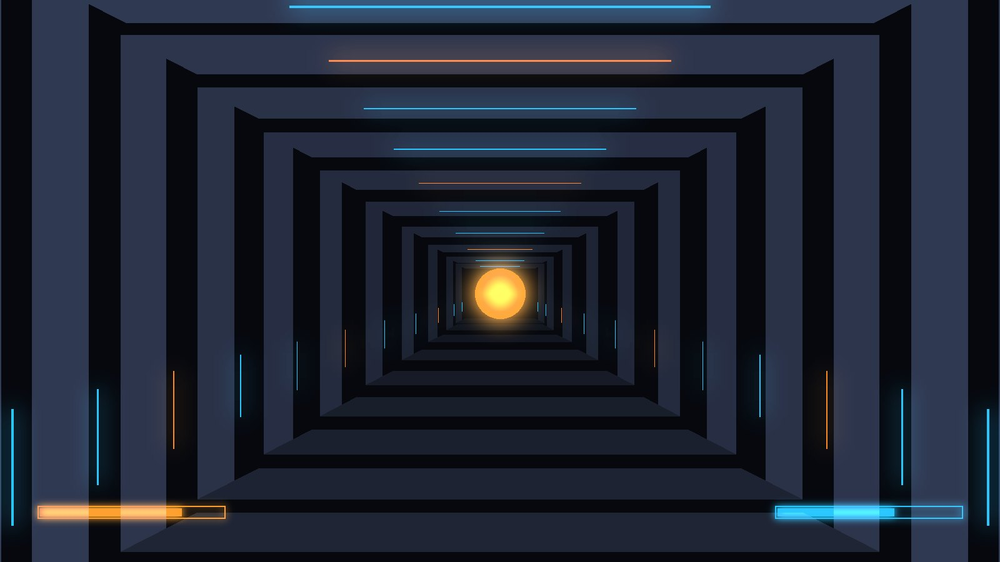
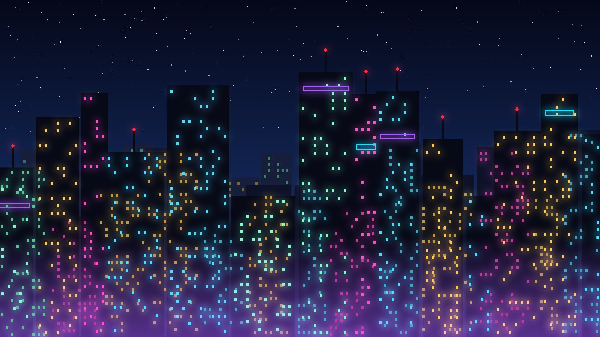
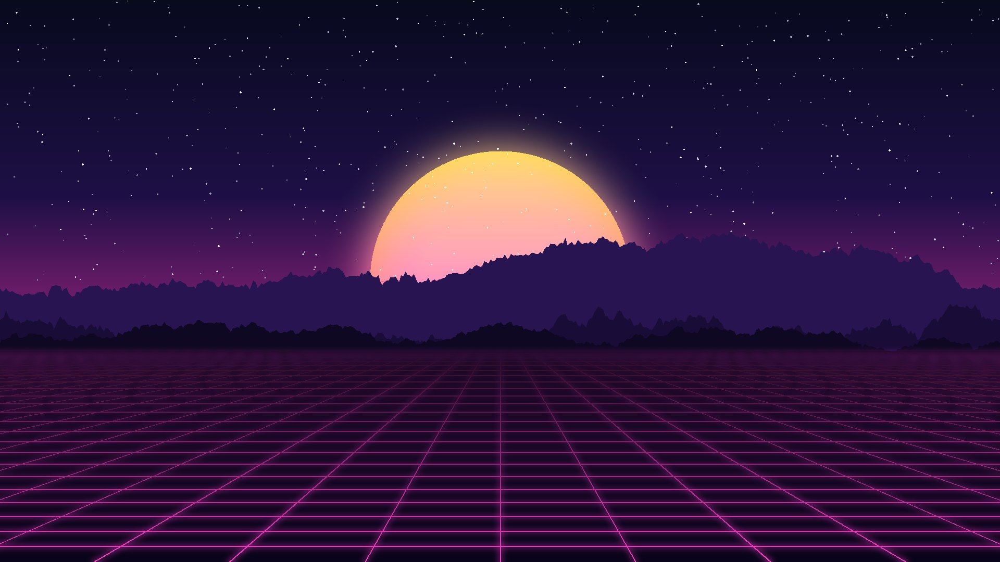
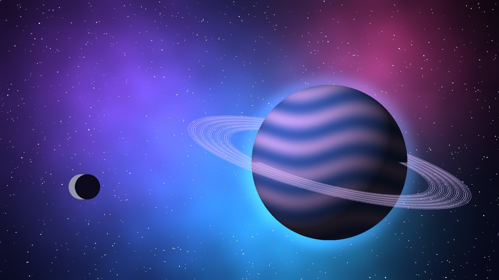
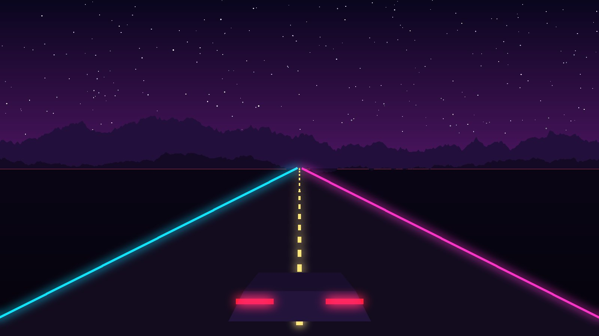
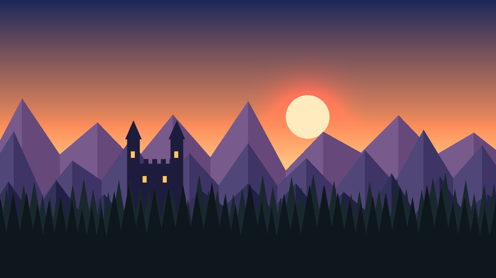
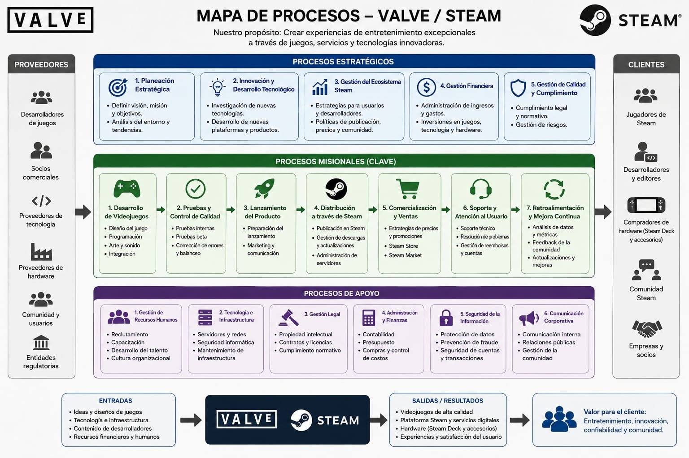
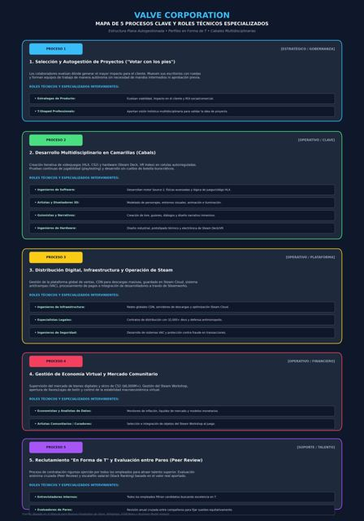
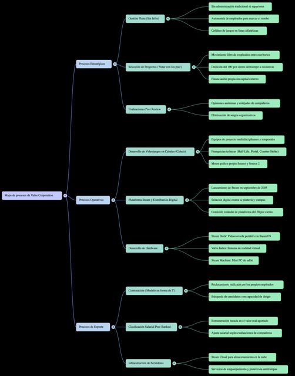

La tienda digital y plataforma de distribución de videojuegos para ordenadores Windows, Mac y Linux. Analizamos sus procesos, su organización sin jefes, sus riesgos, su red global y su impacto ambiental, con todos los documentos del proyecto en un solo lugar.

Más de 50 premios a Juego del Año. Abrió su motor a los mods.

Nació como mod de la comunidad y Valve lo integró a su portafolio.

Parches automáticos y freno a la piratería: nace la distribución digital.

Realidad virtual con seguimiento capacitivo de dedos.

Consola portátil con SteamOS y la capa Proton.

Economía virtual de CS2 y Dota 2 con Steam Workshop.
Qué estudiamos de Steam y por qué su modelo digital importa para la gestión ambiental.
Analizar el funcionamiento de la plataforma Steam como sistema de distribución digital de videojuegos, evaluando sus principales procesos y sistemas, y estudiar su impacto ambiental.
Estratégicos, misionales y de apoyo: desde el desarrollo de videojuegos hasta el soporte al usuario.
SST (GTC 45), Calidad (ISO 9001), Seguridad de la información (ISO 27001) y Ambiental (ISO 14001).
La distribución digital reduce el uso de papel, plástico y transporte físico, y con ello la generación de residuos.
Fundada por los ex-empleados de Microsoft Gabe Newell y Mike Harrington con capital propio, Valve tuvo desde el primer día independencia total frente a los editores tradicionales.
Nace en Kirkland, Washington, con estructura plana desde el inicio.
Revoluciona el entretenimiento interactivo; su motor abierto da origen a Counter-Strike.
Plataforma propia para parches automáticos y contra la piratería.
Su lanzamiento obligatorio vía Steam impulsa la plataforma.
Visor de realidad virtual con seguimiento capacitivo de dedos.
Apuesta insignia por la realidad virtual.
Consola portátil con SteamOS y Proton para jugar la biblioteca de PC.
Demanda colectiva de desarrolladores contra la tasa del 30% y la paridad de precios.
30% estándar, 25% tras US$10M y 20% tras US$50M de facturación por juego.
La economía cosmética de CS2 y Dota 2 genera grandes flujos de caja y vigilancia regulatoria por las loot boxes.
La demanda colectiva argumenta que la posición dominante de Steam limita la libre competencia.
Valve pasó de crear un juego de disparos a dominar la distribución digital en PC y diseñar su propio hardware.
En 1996 Valve eliminó por completo la estructura piramidal. Su manual para empleados consagra un diseño donde nadie reporta a nadie, ni siquiera al fundador Gabe Newell.
El 100% del tiempo de los empleados es autogestionado. No existe asignación de tareas impuesta.
La empresa es un vehículo donde todos comparten el volante, alejándose de los riesgos y hacia las oportunidades.
Los empleados mueven sus escritorios rodantes hacia los proyectos de mayor valor para el cliente.
Máxima maestría en una especialidad (barra vertical) más amplia capacidad generalista (barra horizontal). La compensación se define por evaluación anónima entre pares (Peer Review y Stack Ranking).
La jerarquía es eficiente para la ejecución repetitiva, pero frena la innovación acelerada. Valve organiza el trabajo por mérito, no por mandato.
Propósito: crear experiencias de entretenimiento excepcionales a través de juegos, servicios y tecnologías innovadoras. Procesos estratégicos, misionales y de apoyo conectan a proveedores con clientes.

⤢ AMPLIARPlaneación estratégica · Innovación y desarrollo tecnológico · Gestión del ecosistema Steam · Gestión financiera · Calidad y cumplimiento
Desarrollo de videojuegos → Pruebas y calidad → Lanzamiento → Distribución vía Steam → Comercialización → Soporte → Retroalimentación y mejora continua
Recursos humanos · Tecnología e infraestructura · Gestión legal · Administración y finanzas · Seguridad de la información · Comunicación corporativa
Entretenimiento, innovación, confiabilidad y comunidad.

⤢ AMPLIAR
⤢ AMPLIARSin supervisores, Valve opera apoyada en cinco procesos interconectados y en un perfil de talento estrictamente seleccionado.
Del proveedor al gamer: el taller de entradas y salidas, la matriz de interesados y la asignación de responsabilidades en los Cabals.
Proyecto: plataforma con inteligencia artificial para identificar videojuegos y comparar sus precios en diferentes tiendas o vendedores.
Dueño, socios y gamers concentran la mayor influencia e importancia: se gestionan de cerca. Nube y QA tienen influencia media-baja: se mantienen informados.
Pasa el cursor por una fila para ver cómo funciona cada fase en Valve. El playtester es el “juez supremo”: si un jugador se frustra, la idea se descarta.
| ID | Actividad / fase | Cabal | Facilitador | Escritor | Playtester | Gabe Newell | Cómo funciona en Valve |
|---|
El RACI rígido encasilla roles y destruye la propiedad colectiva. En Valve “todos son diseñadores”.
El error es una oportunidad de aprendizaje; el sistema premia el consenso en lugar de buscar culpables.
Los buenos proyectos atraen personal; los malos no reciben recursos y mueren.
Seis dimensiones del entorno que influyen en Valve y Steam.
Sujeta a regulaciones sobre comercio digital, impuestos, protección de datos y restricciones para videojuegos en algunos países.
Sus ingresos dependen de la venta de videojuegos y de Steam. La inflación, las tasas de cambio y el poder adquisitivo pueden afectarla.
El crecimiento de la comunidad gamer y los eSports la favorece, pero debe responder a expectativas sobre contenido, inclusión y seguridad en línea.
Debe innovar en videojuegos, realidad virtual (SteamVR), ciberseguridad y mejoras de Steam para mantenerse competitiva.
Su impacto es menor que el de las manufactureras, pero busca optimizar el consumo energético de sus centros de datos y promover la distribución digital.
Debe cumplir leyes de propiedad intelectual, derechos de autor, datos personales, defensa del consumidor y compras digitales y microtransacciones.
La regulación digital y la protección de datos son las fuerzas externas que más se repiten en todo el sistema.
Infraestructura en la nube, hardware, logística y oficinas: identificación de aspectos y controles sugeridos. Filtra por medio afectado.
| Aspecto ambiental | Impactos asociados | Medio afectado | Control sugerido |
|---|
5 de 5 aspectos ambientales están conformes. El siguiente paso es llevar la energía renovable de la nube del 85% al 100%.
Mapa de calor, matrices por sistema y plan de tratamiento. Los controles reducen el riesgo total en un 71%: de 130 puntos inherentes a 37 residuales.
| ID | Categoría | Riesgo | Probabilidad | Impacto | Nivel |
|---|---|---|---|---|---|
| 001 | Operativo | Fallo de servidor | Alta | Alto | CRÍTICO |
| 002 | Financiero | Fluctuación de moneda | Media | Medio | MODERADO |
| 003 | Estratégico | Competencia de mercado | Baja | Alto | SIGNIFICATIVO |
| 004 | Cumplimiento | Regulaciones de datos | Media | Bajo | BAJO |
| Riesgo de calidad | Causa raíz | Dimensión ISO 9001 | Inherente | Controles | Responsable | KPI | Residual |
|---|
| Activo / amenaza | Vulnerabilidad | Dimensión CIA | Inherente | Controles Anexo A | Responsable | KPI | Residual |
|---|
| Proceso / actividad | Peligro | Controles existentes | ND·NE·NP·NC | NR | Nivel | Medidas de intervención |
|---|---|---|---|---|---|---|
| Desarrollo de videojuegos Programación y diseño prolongado | Biomecánico Posturas prolongadas y movimientos repetitivos | Sillas ergonómicas, escritorios ajustables y pausas voluntarias | 2 · 3 · 6 · 25 | 150 | II · CORREGIR | Ingeniería: escritorios ajustables y soportes para monitores. Administración: pausas activas cada 60 min y evaluación ergonómica. |
| Laboratorio de hardware Ensamble y pruebas de Steam Deck y Valve Index | Eléctrico Contacto con equipos energizados y prototipos | Pulseras ESD, estaciones protegidas y procedimientos técnicos | 6 · 2 · 12 · 60 | 720 | I · NO ACEPTABLE | Ingeniería: protección diferencial y corte automático. Administración: LOTO, capacitación eléctrica e inspecciones. |
| Operación de Steam Monitoreo de infraestructura y soporte | Psicosocial Estrés por incidentes y alta disponibilidad | Trabajo colaborativo y autonomía organizacional | 6 · 2 · 12 · 25 | 300 | II · CORREGIR | Ingeniería: automatización de alertas. Administración: rotación de turnos y protocolos de incidentes. |
Las loot boxes y la explotación del mercado de skins comparten el factor regulatorio: son los riesgos que más vigilancia necesitan.
5 procesos · 4 aspectos de gestión · 3 controles por proceso. Cada proceso tiene un objetivo, sus controles y un indicador para medirlo.
Reducir el impacto ambiental de los dispositivos y componentes electrónicos desechados.
% de residuos electrónicos entregados para aprovechamiento o tratamiento adecuado.
Prevenir lesiones musculoesqueléticas y fatiga asociadas al trabajo frente a pantallas.
% de puestos evaluados que cumplen los criterios ergonómicos.
Proteger la integridad, disponibilidad y trazabilidad de los sistemas y la información.
% de revisiones de acceso y pruebas de recuperación realizadas según el plan.
Garantizar que los dispositivos cumplan las especificaciones técnicas y funcionales.
% de dispositivos que superan las pruebas de calidad en la primera inspección.
Garantizar respuestas consistentes, oportunas y ajustadas a las políticas de servicio.
% de solicitudes resueltas dentro del plazo establecido.
Better games. A brighter future: cada proceso clave se controla con tres acciones concretas y un indicador medible.
Nodos de caché y connection managers documentados (Visser & Fontugne, IIJ Research Lab, 2024 · PeeringDB AS32590). Pasa el cursor por los nodos.
Cuando la caché de una ciudad se satura o está aislada (Johannesburgo, São Paulo, Sídney), Valve recurre a CDN de terceros:
Sudamérica es la región con menor cobertura propia: solo el 59% de su tráfico lo sirve la caché de Valve.
Dashboard ejecutivo del Sistema de Gestión Integrado: SST · Calidad · Seguridad de la información · Ambiental.
100% de requisitos con evidencia
Aspectos ISO 14001 conformes
Inherente 130 → residual 37 (10 riesgos)
Con residual = 6 (el más alto)
NR 720 · Alto (no aceptable)
Fases completadas o listas
Dossier digital · 2 semanas
Presentación ejecutiva · 2 horas
Evidencia en vivo y logs · 3 días
Minuta previa · 1 h diaria
Acta y compromisos CAPA · 2 horas
Único peligro SST “Alto (no aceptable)”. Preparar registros LOTO, protección diferencial y capacitaciones.
EVID-SST-01 figura como verificado mientras la matriz SST mantiene el control eléctrico en “verificar en campo”.
Loot boxes, explotación de APIs / skins y retraso de hardware. Tener a mano el plan de tratamiento y el heatmap.
8 de 8 requisitos verificados: LOTO, ergonomía, playtesting, soporte, purga PII, Steam Guard / RBAC, energía renovable y reparabilidad.
| ID | Norma | Evidencia requerida | Responsable | Estado |
|---|
Los 24 documentos originales de la carpeta del proyecto. Haz clic para verlos en grande.
Integrantes del proyecto Valve / Steam.